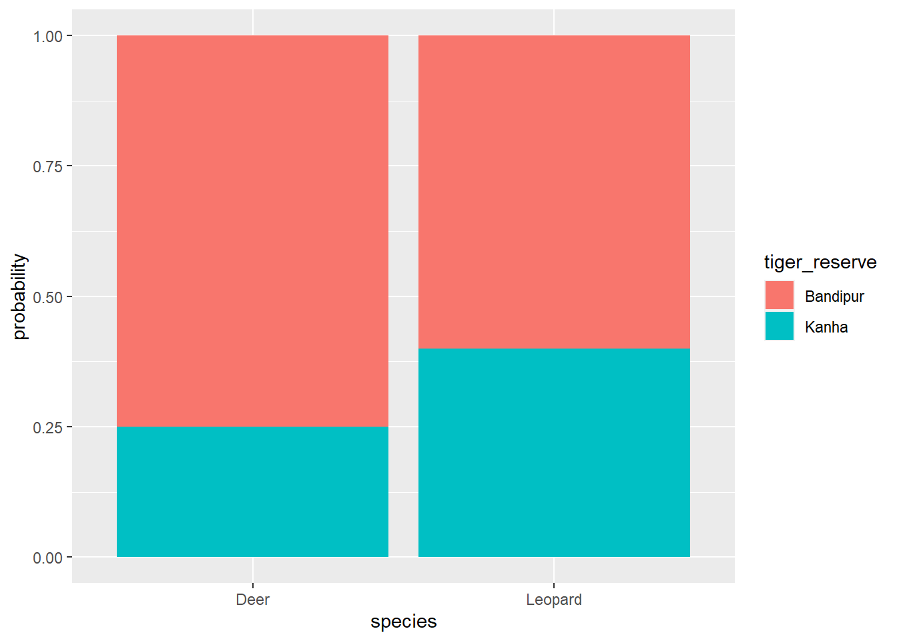

Chapter 10 Probability
10.2 make a data frame, name it I gave df= data frame
df <- data.frame(
species= sample(x = species, 20, replace = T), # replace= T, for repeated sampling (with replacement)
tiger_reserve= sample(x = tiger_reserve, 20, replace = T),
sighting= sample(x = sighting, 20, replace = T)
)## species tiger_reserve sighting
## 1 Deer Kanha 1
## 2 Leopard Bandipur 0
## 3 Leopard Kanha 1
## 4 Leopard Bandipur 1
## 5 Deer Bandipur 0
## 6 Leopard Kanha 0
## 7 Deer Bandipur 1
## 8 Deer Bandipur 1
## 9 Leopard Bandipur 1
## 10 Deer Bandipur 1
## 11 Leopard Kanha 0
## 12 Leopard Bandipur 0
## 13 Deer Bandipur 0
## 14 Leopard Kanha 1
## 15 Deer Kanha 0
## 16 Leopard Bandipur 0
## 17 Leopard Bandipur 1
## 18 Deer Kanha 0
## 19 Deer Kanha 0
## 20 Leopard Kanha 010.3 calculating total sightings
sightings_total <- df %>%
group_by(species, tiger_reserve) %>%
summarize(total_sightings = sum(sighting))## `summarise()` has grouped output by 'species'. You can override using the
## `.groups` argument.10.4 Calculate the probability of seeing each species
probabilities <- sightings_total %>%
mutate (probability = total_sightings / sum(total_sightings)) %>%
mutate (percentage = probability*100)## # A tibble: 4 × 5
## # Groups: species [2]
## species tiger_reserve total_sightings probability percentage
## <chr> <chr> <dbl> <dbl> <dbl>
## 1 Deer Bandipur 3 0.75 75
## 2 Deer Kanha 1 0.25 25
## 3 Leopard Bandipur 3 0.6 60
## 4 Leopard Kanha 2 0.4 40## Deer, Bandipur, n = 1; Kanha, n = 1
## Deer, n = 2, Mean = 2.00, SD = 1.41, Median = 2.00, MAD = 1.48, range: [1, 3], Skewness = 0.00, Kurtosis = -2.00, 0 missing
## Deer, n = 2, Mean = 0.50, SD = 0.35, Median = 0.50, MAD = 0.37, range: [0.25, 0.75], Skewness = 0.00, Kurtosis = -2.00, 0 missing
## Deer, n = 2, Mean = 50.00, SD = 35.36, Median = 50.00, MAD = 37.06, range: [25, 75], Skewness = 0.00, Kurtosis = -2.00, 0 missing
## Leopard, Bandipur, n = 1; Kanha, n = 1
## Leopard, n = 2, Mean = 2.50, SD = 0.71, Median = 2.50, MAD = 0.74, range: [2, 3], Skewness = 0.00, Kurtosis = -2.00, 0 missing
## Leopard, n = 2, Mean = 0.50, SD = 0.14, Median = 0.50, MAD = 0.15, range: [0.40, 0.60], Skewness = 0.00, Kurtosis = -2.00, 0 missing
## Leopard, n = 2, Mean = 50.00, SD = 14.14, Median = 50.00, MAD = 14.83, range: [40, 60], Skewness = 0.00, Kurtosis = -2.00, 0 missingprobabilities %>% ggplot(aes(x= species, y= probability, fill= tiger_reserve))+
geom_bar(stat = 'identity')

Figure 10.1: Probability